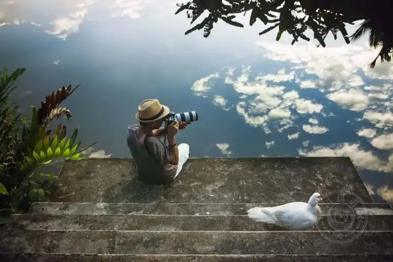
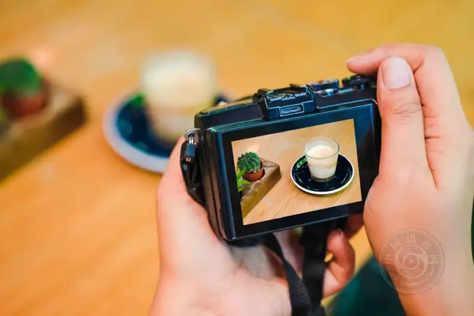
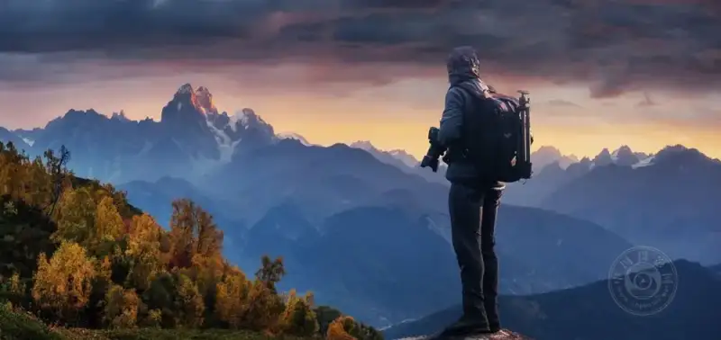
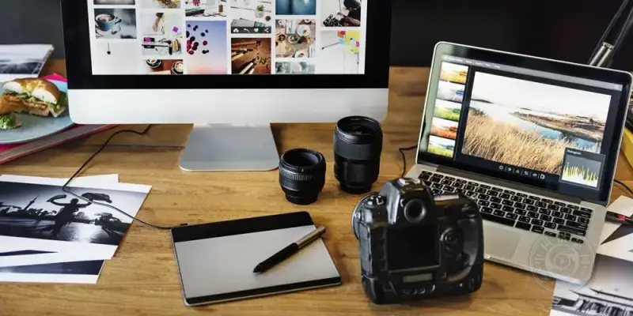

Friends, let us get straight to the point.
Whether you just picked up a camera or have shot for years, you probably have a style in mind. It is the look you want to produce, the one that people recognize as yours at a glance.
But tastes change faster than the weather.
Today you love high saturation, tomorrow you want the cool black-and-white look. Lately you like portraits, and in a couple of months street shooting may feel more exciting.
This is perfectly normal. Do not feel that you are fickle.
So what matters?
Styles can change, but you should not lose the core feel that is you.
The colors you love, the way you compose, and whether the mood in your frames is warm or cold are the real reasons people follow you.
Do not worry about what others say. The voice inside you counts more than anyone's.
Enough talk. These 5 points are just for sharing. If they help, give them a try.

1. First ask yourself: what do I really want to shoot?
Do not start by pressing the shutter over and over.
First be clear about this.
Do I want this photo to make people smile, or to make them stop and think?
Am I shooting for myself, or do I want to express something?
Do not rush to a conclusion.
You can shoot a bit of everything: portraits, landscapes, street, even the odd cosplay.
As you keep shooting, you will learn what feels most natural to you.
Be patient. Do not push yourself.

2. You can borrow inspiration, but do not copy it
It is fine to look at magazines and good photos by others, and to study their poses, light, and angles.
But never copy them outright.
You must add something of your own, even a little. Change the tone, the crop, or the mood.
That little bit is your signature.
Here is an imperfect comparison.
When you do homework, you look things up, but you do not copy and paste the whole text.
Photography works the same way.
3. Be tough on yourself and delete your own photos
Honestly, it is hard to be objective when we look at our own photos.
One moment you think this shot is amazing, and the next you wonder what on earth you shot.
Here is a simple trick that works well.
Pick the twenty or thirty you think are best, thenforce yourself to delete half of them..
Look closely at the ones that are left.
What do they have in common? What tone do they lean to? Are there more close-ups or more wide shots?
When you finish, you will realize: so this is what I like.

4. Know what you are good at, then go deeper
Shoot what you are good at.
Do not follow the crowd blindly. If others shoot the stars, you do not have to. If others shoot film, you do not have to.
First make what you do best truly excellent, then think about the rest.
Before each shoot, have a rough plan in mind.
How is the light? How do you want to compose? Where is the location? What aperture do you use?
You do not need precision down to the millimeter every time, but at least do not shoot without a plan.
Do you want to know whether people like what you shoot?
Pay attention to the reactions of friends and the people who follow your work. See which kind of photos they look at longer.
Just have a sense of it. Do not overanalyze.

5. Shots went wrong? Congratulations, you improved a little
Do not fear bad shots.
Everyone has an off day.
Focus missed, exposure too high, composition crooked.
None of this is a problem. It helps you remember for next time.
Besides, taste keeps changing.
What you feel is your style now may be hard for you to look at in a couple of years.
So what do you do? Change.
As long as you still want to hold a camera, you need not fear detours.
One last heartfelt thought
These 5 points are not iron rules.
No one forces you to follow them.
They are just a few suggestions. Try them if you like, and set them aside if they do not fit.
The most important thing is that you enjoy shooting and feel free.
Your style is not made by praise from others. You build it frame by frame.
So do not overthink it. Take your camera and go out.
Shoot what you want, and become who you want to be.